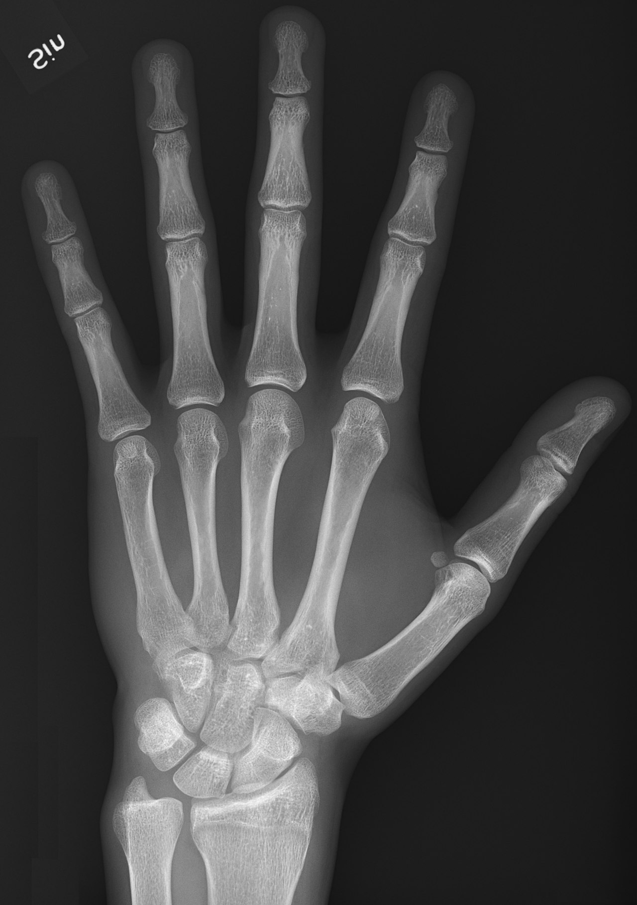

Ficha del catálogo
Radiografía de mano normal (dorsopalmar)
- Sistema
- Óseo
- Modalidad
- RX
- Región
- Mano
- Dificultad
- Básico
Proyección básica de la mano en la que el dorso descansa sobre el chasis y el haz incide perpendicular. Es de los primeros estudios que se aprenden porque despliega con claridad falanges, metacarpianos y los ocho huesos del carpo, y porque sirve de referencia para reconocer después cualquier alteración.
Técnica
Paciente sentado, antebrazo apoyado sobre la mesa, palma en contacto con el receptor y dedos ligeramente separados. Rayo central perpendicular a la cabeza del tercer metacarpiano.
Qué observar
- Corticales óseas continuas y bien definidas: Cualquier escalón o línea radiolúcida obliga a descartar fractura
- Espacios articulares conservados y de amplitud simétrica entre los dedos
- Los ocho huesos del carpo en sus dos hileras, sin superposiciones anómalas
- En niños, los cartílagos de crecimiento (fisis) se ven como bandas oscuras regulares: No confundirlos con trazos de fractura
- Partes blandas sin aumento de volumen ni cuerpos extraños radiopacos
Hallazgos
Mano radiológicamente normal: Alineación conservada, corticales íntegras en todas las falanges y metacarpianos, espacios articulares simétricos y partes blandas sin alteraciones.
Perlas
El escafoides es el hueso del carpo que más se fractura y el que más fracturas oculta en la proyección estándar. Ante dolor en la tabaquera anatómica se pide una proyección específica de escafoides, aunque la radiografía inicial parezca normal.
Diagnóstico diferencial
- Fractura no desplazada de falange o metacarpiano
- Se busca una línea radiolúcida que interrumpa la cortical y que no coincida con el trayecto de una fisis ni con el borde de un hueso superpuesto; suele acompañarse de aumento focal de partes blandas en el mismo sitio del dolor.
- Fractura de escafoides oculta
- La proyección dorsopalmar estándar puede ser normal; obliga a valorar el escafoides en proyecciones específicas y a repetir el estudio o completar con corte tomográfico o resonancia si persiste el dolor en la tabaquera anatómica.
- Artritis inflamatoria precoz
- En lugar de un trazo agudo aparecen erosiones marginales, disminución simétrica de los espacios articulares y osteopenia yuxtaarticular, con distribución que respeta o afecta selectivamente determinadas articulaciones.
- Artrosis de las articulaciones interfalángicas
- Predominan pinzamiento articular, esclerosis subcondral y osteofitos marginales en interfalángicas distales y en la base del pulgar, sin erosiones de tipo inflamatorio.
- Coalición o fusión carpiana
- Se observa continuidad ósea entre dos huesos del carpo con ausencia del espacio articular, de bordes lisos y corticales bien definidas, sin signos agudos ni edema de partes blandas.
Simuladores
- Los cartílagos de crecimiento en niños se ven como bandas radiolúcidas regulares y simétricas con bordes esclerosos: No confundirlos con trazos de fractura, para lo que ayuda comparar con la mano contralateral.
- Los huesos supernumerarios y sesamoideos del carpo y de la mano son redondeados, corticalizados y de bordes lisos, a diferencia del fragmento agudo, que tiene bordes angulosos y sin cortical.
- Las superposiciones entre metacarpianos y entre las hileras del carpo generan líneas oscuras aparentes; si la línea se prolonga más allá del contorno del hueso, es un artificio de proyección y no un trazo.
- Un pliegue cutáneo o una banda de partes blandas puede proyectarse como una línea lineal que cruza el hueso (se reconoce porque continúa fuera del contorno óseo).
Por modalidad
- RX
- Estudio inicial y suficiente en la mayoría de los casos: Valora alineación, corticales, espacios articulares y calcificaciones de partes blandas con dosis muy baja.
- TC
- Resuelve fracturas ocultas o complejas, sobre todo del carpo, y permite reconstrucciones multiplanares para ver escalones articulares y consolidación.
- RM
- Método más sensible para fractura oculta reciente, edema óseo, necrosis avascular del escafoides o del semilunar y lesiones ligamentarias y tendinosas.
- US
- Útil para tendones, poleas, ganglión y cuerpos extraños radiotransparentes, y permite exploración dinámica en tiempo real.
Protocolo
Paciente sentado junto a la mesa, con el hombro, el codo y la muñeca al mismo nivel. Para la dorsopalmar la palma apoya sobre el receptor con los dedos ligeramente separados y el rayo central perpendicular a la cabeza del tercer metacarpiano. Se completa habitualmente con una oblicua a 45° apoyada sobre un cuñón y una lateral verdadera en abanico. Se usa baja energía y foco fino para privilegiar el detalle, con colimación al área de interés y protección gonadal cuando corresponde.
Clasificación
En la mano normal no se aplica una escala diagnóstica, pero es la base anatómica sobre la que después se emplean sistemas como la clasificación AO para fracturas de huesos largos de la mano, la clasificación de Herbert para el escafoides o el estudio de la edad ósea mediante atlas de maduración esquelética a partir de la mano izquierda.
Errores frecuentes
- Dar por normal el estudio sin haber revisado uno por uno los ocho huesos del carpo, en especial el escafoides y el semilunar.
- Interpretar una fisis abierta en un niño como trazo de fractura, o al contrario, atribuir a la fisis un despegamiento fisario real.
- Olvidar valorar las partes blandas, donde el aumento de volumen focal o un cuerpo extraño radiopaco puede ser la única pista.
- Considerar excluida la lesión ligamentaria del carpo cuando la alineación puede parecer conservada en una única proyección sin estudio comparativo o dinámico.

mano carpo falanges metacarpianos escafoides normal anatomia